Contents
- SHAPE, MOTION AND DEFORMATION ANALYSIS OF 2D ECHOCARDIOGRAPHIC SEQUENCES
- Myocardial shape at the beginning of the cycle, at end of the systole and at end of the diastole
- Total length of the entire myocardial shape at end-systole (les, at end-diastole (led) and ratio.
- Radial and longitudinal direction of the myocardial wall
- Radial and Longitudinal Displacement Calculation
- Radial and Longitudinal Velocity Calculation
- Strain Calculation
SHAPE, MOTION AND DEFORMATION ANALYSIS OF 2D ECHOCARDIOGRAPHIC SEQUENCES
Drag your data into the workspace to begin the analysis.
clc; close all; warning('off', 'MATLAB:singularMatrix')
Myocardial shape at the beginning of the cycle, at end of the systole and at end of the diastole
% Subject 1 Myocardial shape figure; subplot(2,2,1); hold on; axis equal axis([-60,40,-120,0]) title('Subject 1'); plot(Subject{1}.phi_x(1,:),Subject{1}.phi_y(1,:),'Marker','x'); plot(Subject{1}.phi_x(endSystole,:),Subject{1}.phi_y(endSystole,:),'r'); plot(Subject{1}.phi_x(endDiastole,:),Subject{1}.phi_y(endDiastole,:),'g'); legend('t=1','End systole','End diastole'); xlabel('x coordinate') ylabel('y coordinate') % Subject 2 Myocardial shape subplot(2,2,2); hold on; axis equal axis([-60,40,-120,0]) title('Subject 2'); plot(Subject{2}.phi_x(1,:),Subject{2}.phi_y(1,:),'Marker','x'); plot(Subject{2}.phi_x(endSystole,:),Subject{2}.phi_y(endSystole,:),'r'); plot(Subject{2}.phi_x(endDiastole,:),Subject{2}.phi_y(endDiastole,:),'g'); xlabel('x coordinate') ylabel('y coordinate') % Subject 3 Myocardial shape subplot(2,2,3); hold on; axis equal axis([-60,40,-120,0]) title('Subject 3'); plot(Subject{3}.phi_x(1,:),Subject{3}.phi_y(1,:),'Marker','x'); plot(Subject{3}.phi_x(endSystole,:),Subject{3}.phi_y(endSystole,:),'r'); plot(Subject{3}.phi_x(endDiastole,:),Subject{3}.phi_y(endDiastole,:),'g'); xlabel('x coordinate') ylabel('y coordinate') % Subject 4 Myocardial shape subplot(2,2,4); hold on; axis equal axis([-60,40,-120,0]) title('Subject 4'); plot(Subject{4}.phi_x(1,:),Subject{4}.phi_y(1,:),'Marker','x'); plot(Subject{4}.phi_x(endSystole,:),Subject{4}.phi_y(endSystole,:),'r'); plot(Subject{4}.phi_x(endDiastole,:),Subject{4}.phi_y(endDiastole,:),'g'); xlabel('x coordinate') ylabel('y coordinate')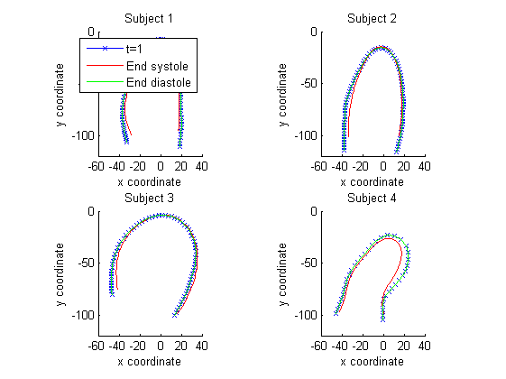
Total length of the entire myocardial shape at end-systole (les, at end-diastole (led) and ratio.
% Subject 1 led1 = 0; %length myocardium at end diastole for j = endDiastole % time for i = 2:74 % points diff_long_x = (Subject{1}.phi_x(j,i+1) - Subject{1}.phi_x(j,i-1))/2; diff_long_y = (Subject{1}.phi_y(j,i+1) - Subject{1}.phi_y(j,i-1))/2; diff_long = [diff_long_x,diff_long_y]; led1 = led1 + norm(diff_long); end end les1 = 0; % length myocardium at end systole for j = endSystole % for i = 2:74 diff_long_x = (Subject{1}.phi_x(j,i+1) - Subject{1}.phi_x(j,i-1))/2; diff_long_y = (Subject{1}.phi_y(j,i+1) - Subject{1}.phi_y(j,i-1))/2; diff_long = [diff_long_x,diff_long_y]; les1 = les1 + norm(diff_long); end end ratio1=(led1-les1)/led1; %Another aproximation of longitud with slyghtly different results % led1 = 0; %length myocardium at end diastole % for j = endDiastole %tiempo % for i = 2:74 %puntos % diff_long_x = (Subject{1}.phi_x(j,i) - Subject{1}.phi_x(j,i-1)); % diff_long_y = (Subject{1}.phi_y(j,i) - Subject{1}.phi_y(j,i-1)); % diff_long = sqrt( (diff_long_x)^2 + (diff_long_y)^2); % led1 = led1 + diff_long; % end % end % % les1 = 0; %length myocardium at end systole % for j = endSystole %tiempo % for i = 2:74 %puntos % diff_long_x = (Subject{1}.phi_x(j,i) - Subject{1}.phi_x(j,i-1)); % diff_long_y = (Subject{1}.phi_y(j,i) - Subject{1}.phi_y(j,i-1)); % diff_long = sqrt( (diff_long_x)^2 + (diff_long_y)^2); % les1 = les1 + diff_long; % end % end % ratio1b=(led1-les1)/led1; % Subject 2 led2 = 0; %length myocardium at end diastole for j = endDiastole % time for i = 2:80 % points diff_long_x = (Subject{2}.phi_x(j,i+1) - Subject{2}.phi_x(j,i-1))/2; diff_long_y = (Subject{2}.phi_y(j,i+1) - Subject{2}.phi_y(j,i-1))/2; diff_long = [diff_long_x,diff_long_y]; led2 = led2 + norm(diff_long); end end les2 = 0; %length myocardium at end systole for j = endSystole % time for i = 2:80 % points diff_long_x = (Subject{2}.phi_x(j,i+1) - Subject{2}.phi_x(j,i-1))/2; diff_long_y = (Subject{2}.phi_y(j,i+1) - Subject{2}.phi_y(j,i-1))/2; diff_long = [diff_long_x,diff_long_y]; les2 = les2 + norm(diff_long); end end ratio2=(led2-les2)/led2; % Subject 3 led3 = 0; %length myocardium at end diastole for j = endDiastole %time for i = 2:70 % points diff_long_x = (Subject{3}.phi_x(j,i+1) - Subject{3}.phi_x(j,i-1))/2; diff_long_y = (Subject{3}.phi_y(j,i+1) - Subject{3}.phi_y(j,i-1))/2; diff_long = [diff_long_x,diff_long_y]; led3 = led3 + norm(diff_long); end end les3 = 0; %length myocardium at end systole for j = endSystole %time for i = 2:70 %points diff_long_x = (Subject{3}.phi_x(j,i+1) - Subject{3}.phi_x(j,i-1))/2; diff_long_y = (Subject{3}.phi_y(j,i+1) - Subject{3}.phi_y(j,i-1))/2; diff_long = [diff_long_x,diff_long_y]; les3 = les3 + norm(diff_long); end end ratio3=(led3-les3)/led3; % Subject 4 led4 = 0; %length myocardium at end diastole for j = endDiastole %time for i = 2:36 %points diff_long_x = (Subject{4}.phi_x(j,i+1) - Subject{4}.phi_x(j,i-1))/2; diff_long_y = (Subject{4}.phi_y(j,i+1) - Subject{4}.phi_y(j,i-1))/2; diff_long = [diff_long_x,diff_long_y]; led4 = led4 + norm(diff_long); end end les4 = 0; %length myocardium at end systole for j = endSystole % time for i = 2:36 % points diff_long_x = (Subject{4}.phi_x(j,i+1) - Subject{4}.phi_x(j,i-1))/2; diff_long_y = (Subject{4}.phi_y(j,i+1) - Subject{4}.phi_y(j,i-1))/2; diff_long = [diff_long_x,diff_long_y]; les4 = les4 + norm(diff_long); end end ratio4=(led4-les4)/led4;
Radial and longitudinal direction of the myocardial wall
Subject 1
e_long1 = zeros(83,75,2); e_radial1 = zeros(83,75,2); for j = 1:83 % time for i = 2:74 % points diff_long_x = (Subject{1}.phi_x(j,i+1) - Subject{1}.phi_x(j,i-1))/2; diff_long_y = (Subject{1}.phi_y(j,i+1) - Subject{1}.phi_y(j,i-1))/2; diff_long = [diff_long_x,diff_long_y]; tmp1 = diff_long / norm(diff_long); tmp2 = [0, -1; 1, 0 ] * tmp1'; if i < 75 / 2 e_long1(j,i,:) = tmp1; else e_long1(j,i,:) = -tmp1; end e_radial1(j,i,:) = tmp2; end e_long1(j,1,:) = 0; e_radial1(j,1,:) = 0; e_long1(j,75,:) = 0; e_radial1(j,75,:) = 0; end % Subject 2 e_long2 = zeros(83,81,2); e_radial2 = zeros(83,81,2); for j = 1:83 % time for i = 2:80 % points diff_long_x = (Subject{2}.phi_x(j,i+1) - Subject{2}.phi_x(j,i-1))/2; diff_long_y = (Subject{2}.phi_y(j,i+1) - Subject{2}.phi_y(j,i-1))/2; diff_long = [diff_long_x,diff_long_y]; tmp1 = diff_long / norm(diff_long); tmp2 = [0, -1; 1, 0 ] * tmp1'; if i < 81 / 2 e_long2(j,i,:) = tmp1; else e_long2(j,i,:) = -tmp1; end e_radial2(j,i,:) = tmp2; end e_long2(j,1,:) = 0; e_radial2(j,1,:) = 0; e_long2(j,81,:) = 0; e_radial2(j,81,:) = 0; end % Subject 3 e_long3 = zeros(83,71,2); e_radial3 = zeros(83,71,2); for j = 1:83 % time for i = 2:70 % points diff_long_x = (Subject{3}.phi_x(j,i+1) - Subject{3}.phi_x(j,i-1))/2; diff_long_y = (Subject{3}.phi_y(j,i+1) - Subject{3}.phi_y(j,i-1))/2; diff_long = [diff_long_x,diff_long_y]; tmp1 = diff_long / norm(diff_long); tmp2 = [0, -1; 1, 0 ] * tmp1'; if i < 71 / 2 e_long3(j,i,:) = tmp1; else e_long3(j,i,:) = -tmp1; end e_radial3(j,i,:) = tmp2; end e_long3(j,1,:) = 0; e_radial3(j,1,:) = 0; e_long3(j,71,:) = 0; e_radial3(j,71,:) = 0; end % Subject 4 e_long4 = zeros(83,37,2); e_radial4 = zeros(83,37,2); for j = 1:83 % time for i = 2:36 % points diff_long_x = (Subject{4}.phi_x(j,i+1) - Subject{4}.phi_x(j,i-1))/2; diff_long_y = (Subject{4}.phi_y(j,i+1) - Subject{4}.phi_y(j,i-1))/2; diff_long = [diff_long_x,diff_long_y]; tmp1 = diff_long / norm(diff_long); tmp2 = [0, -1; 1, 0 ] * tmp1'; if i < 37 / 2 e_long4(j,i,:) = tmp1; else e_long4(j,i,:) = -tmp1; end e_radial4(j,i,:) = tmp2; end e_long4(j,1,:) = 0; e_radial4(j,1,:) = 0; e_long4(j,37,:) = 0; e_radial4(j,37,:) = 0; end % Plot direction vectors of the 4 Subjects figure; axis equal; axis([-60,40,-120,0]) subplot(2,2,1) hold on quiver(Subject{1}.phi_x(1,:), Subject{1}.phi_y(1,:), e_long1(1,:,1), e_long1(1,:,2),'r') quiver(Subject{1}.phi_x(1,:), Subject{1}.phi_y(1,:), e_radial1(1,:,1), e_radial1(1,:,2),'b') legend('Longitudinal direction','Radial direction') xlabel('x coordinate') ylabel('y coordinate') title('Directions of each point at the beginning of the cycle of Subject 1') subplot(2,2,2) hold on quiver(Subject{2}.phi_x(1,:), Subject{2}.phi_y(1,:), e_long2(1,:,1), e_long2(1,:,2),'r') quiver(Subject{2}.phi_x(1,:), Subject{2}.phi_y(1,:), e_radial2(1,:,1), e_radial2(1,:,2),'b') legend('Longitudinal direction','Radial direction') xlabel('x coordinate') ylabel('y coordinate') title('Directions of each point at the beginning of the cycle of Subject 2') subplot(2,2,3) hold on quiver(Subject{3}.phi_x(1,:), Subject{3}.phi_y(1,:), e_long3(1,:,1), e_long3(1,:,2),'r') quiver(Subject{3}.phi_x(1,:), Subject{3}.phi_y(1,:), e_radial3(1,:,1), e_radial3(1,:,2),'b') legend('Longitudinal direction','Radial direction') xlabel('x coordinate') ylabel('y coordinate') title('Directions of each point at the beginning of the cycle of Subject 3') subplot(2,2,4) hold on quiver(Subject{4}.phi_x(1,:), Subject{4}.phi_y(1,:), e_long4(1,:,1), e_long4(1,:,2),'r') quiver(Subject{4}.phi_x(1,:), Subject{4}.phi_y(1,:), e_radial4(1,:,1), e_radial4(1,:,2),'b') legend('Longitudinal direction','Radial direction') xlabel('x coordinate') ylabel('y coordinate') title('Directions of each point at the beginning of the cycle of Subject 4')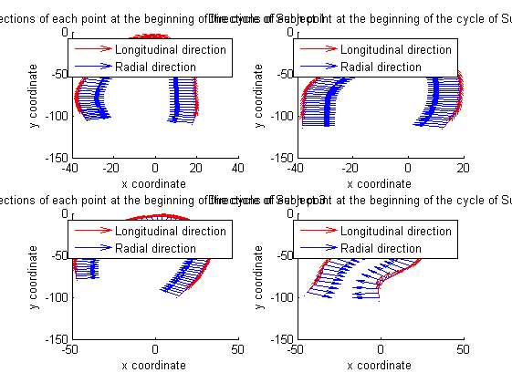
Radial and Longitudinal Displacement Calculation
% Subject 1 U_rl1 = zeros(83,75,2); for j = 2:83 %time for i = 1:75 %point u_x1(j,i) = Subject{1}.phi_x(j,i) - Subject{1}.phi_x(1,i); u_y1(j,i) = Subject{1}.phi_y(j,i) - Subject{1}.phi_y(1,i); tmp1 = [u_x1(j,i); u_y1(j,i)]; P1 = [e_radial1(j,i,1),e_long1(j,i,1);e_radial1(j,i,2),e_long1(j,i,2)]; % Ax = b. One way to solve this is with x = inv(A)*b. % A better way, from both an execution time and numerical accuracy % standpoint, is to use the matrix division operator x = A\b. U_rl1(j,i,:) = inv(P1)*tmp1; end end % Subject 2 U_rl2 = zeros(83,81,2); for j = 2:83 %time for i = 1:81 %point u_x2(j,i) = Subject{2}.phi_x(j,i) - Subject{2}.phi_x(1,i); u_y2(j,i) = Subject{2}.phi_y(j,i) - Subject{2}.phi_y(1,i); tmp1 = [u_x2(j,i); u_y2(j,i)]; P1 = [e_radial2(j,i,1),e_long2(j,i,1);e_radial2(j,i,2),e_long2(j,i,2)]; U_rl2(j,i,:) = inv(P1)*tmp1; end end % Subject 3 U_rl3 = zeros(83,71,2); for j = 2:83 %time for i = 1:71 %point u_x3(j,i) = Subject{3}.phi_x(j,i) - Subject{3}.phi_x(1,i); u_y3(j,i) = Subject{3}.phi_y(j,i) - Subject{3}.phi_y(1,i); tmp1 = [u_x3(j,i); u_y3(j,i)]; P1 = [e_radial3(j,i,1),e_long3(j,i,1);e_radial3(j,i,2),e_long3(j,i,2)]; U_rl3(j,i,:) = inv(P1)*tmp1; end end % Subject 4 U_rl4 = zeros(83,37,2); for j = 2:83 %time for i = 1:37 %point u_x4(j,i) = Subject{4}.phi_x(j,i) - Subject{4}.phi_x(1,i); u_y4(j,i) = Subject{4}.phi_y(j,i) - Subject{4}.phi_y(1,i); tmp1 = [u_x4(j,i); u_y4(j,i)]; P1 = [e_radial4(j,i,1),e_long4(j,i,1);e_radial4(j,i,2),e_long4(j,i,2)]; U_rl4(j,i,:) = inv(P1)*tmp1; end end % RADIAL DISPLACEMENT OF 3 POINTS + LONGITUDINAL DISPLACEMENT OF 3 POINTS figure; subplot(2,1,1) hold on; axis([1,83,-5,16]) plot(1:83,U_rl1(:,6,1)); plot(1:83,U_rl1(:,19,1),'r'); plot(1:83,U_rl1(:,31,1),'m'); title('Radial displacement at three different points of Subject 1') legend('Point i=6','Point i=19','Point i=31') xlabel('Number of frame') ylabel('Displacement') subplot(2,1,2) hold on; axis([1,83,-5,16]) plot(1:83,U_rl1(:,6,2)); plot(1:83,U_rl1(:,19,2),'r'); plot(1:83,U_rl1(:,31,2),'m'); title('Longitudinal displacement at three different points of Subject 1') legend('Point i=6','Point i=19','Point i=31') xlabel('Number of frame') ylabel('Displacement') % Radial and longitudinal displacement for the 4 Subjects at mid-septal % level figure; subplot(2,1,1) hold on; axis([1,83,-5,10]) plot(1:83,U_rl1(:,19,1)); plot(1:83,U_rl2(:,20,1),'r'); plot(1:83,U_rl3(:,18,1),'m'); plot(1:83,U_rl4(:,9,1),'g'); title('Radial displacement at the mid-septal level') legend('Subject 1','Subject 2','Subject 3','Subject 4') xlabel('Number of frame') ylabel('Displacement') subplot(2,1,2) hold on; axis equal; axis([1,83,-5,10]) plot(1:83,U_rl1(:,19,2)); plot(1:83,U_rl2(:,20,2),'r'); plot(1:83,U_rl3(:,18,2),'m'); plot(1:83,U_rl4(:,9,2),'g'); title('Longitudinal displacement at the mid-septal level') legend('Subject 1','Subject 2','Subject 3','Subject 4') xlabel('Number of frame') ylabel('Displacement') % Imagesc plot figure h = subplot(2,4,1); imagesc(U_rl1(:,:,1)') axis manual axis square set(h,'CLim',[-2,2]) xlabel('time frames') ylabel('points') title('Radial displacement Subject 1') h = subplot(2,4,5); imagesc(U_rl1(:,:,2)') axis manual axis square set(h,'CLim',[-5,5]) xlabel('time frames') ylabel('points') title('Longitudinal displacement Subject 1') h = subplot(2,4,2); imagesc(U_rl2(:,:,1)') axis manual axis square set(h,'CLim',[-2,2]) xlabel('time frames') ylabel('points') title('Radial displacement Subject 2') h = subplot(2,4,6); imagesc(U_rl2(:,:,2)') axis manual axis square set(h,'CLim',[-5,5]) xlabel('time frames') ylabel('points') title('Longitudinal displacement Subject 2') h = subplot(2,4,3); imagesc(U_rl3(:,:,1)') axis manual axis square set(h,'CLim',[-2,2]) xlabel('time frames') ylabel('points') title('Radial displacement Subject 3') h = subplot(2,4,7); imagesc(U_rl3(:,:,2)') axis manual axis square set(h,'CLim',[-5,5]) xlabel('time frames') ylabel('points') title('Longitudinal displacement Subject 3') h = subplot(2,4,4); imagesc(U_rl4(:,:,1)') axis manual axis square set(h,'CLim',[-2,2]) xlabel('time frames') ylabel('points') title('Radial displacement Subject 4') h = subplot(2,4,8); imagesc(U_rl4(:,:,2)') axis manual axis square set(h,'CLim',[-5,5]) xlabel('time frames') ylabel('points') title('Longitudinal displacement Subject 4')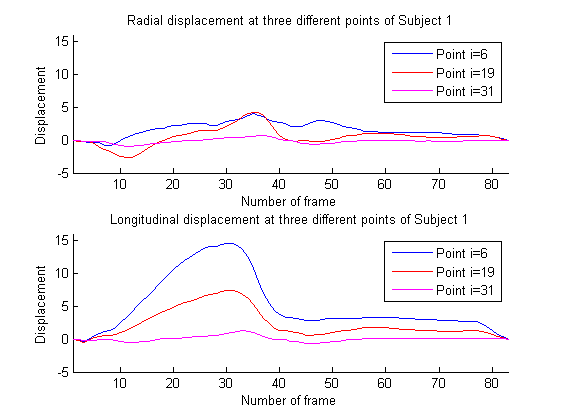 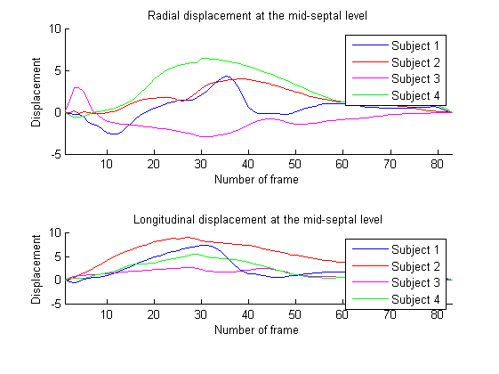 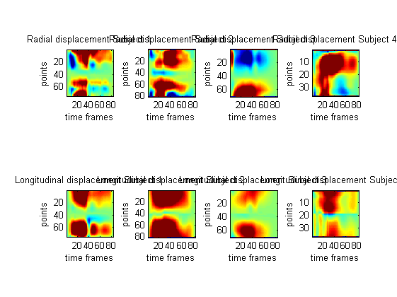
Radial and Longitudinal Velocity Calculation
% Subject 1 V_rl1 = zeros(82,75,2); for i = 1:75 V_rl1(:,i,1)= diff(U_rl1(:,i,1))/timeInterval; V_rl1(:,i,2)= diff(U_rl1(:,i,2))/timeInterval; end % Subject 2 V_rl2 = zeros(82,81,2); for i = 1:81 V_rl2(:,i,1)= diff(U_rl2(:,i,1))/timeInterval; V_rl2(:,i,2)= diff(U_rl2(:,i,2))/timeInterval; end % Subject 3 V_rl3 = zeros(82,71,2); for i = 1:71 V_rl3(:,i,1)= diff(U_rl3(:,i,1))/timeInterval; V_rl3(:,i,2)= diff(U_rl3(:,i,2))/timeInterval; end % Subject 4 V_rl4 = zeros(82,37,2); for i = 1:37 V_rl4(:,i,1)= diff(U_rl4(:,i,1))/timeInterval; V_rl4(:,i,2)= diff(U_rl4(:,i,2))/timeInterval; end % Radial velocity plot (spatiotemporal information using meshgrid) figure tiempo = 1:82; subplot(2,2,1) puntos = 1:75; meshgrid(tiempo,puntos); h = surf(V_rl1(:,:,1)); axis([1 75 1 82 -150 150]); title('Radial velocity Subject 1') xlabel('points') ylabel('time frames') zlabel('velocity') subplot(2,2,2) puntos = 1:81; meshgrid(tiempo,puntos); h = surf(V_rl2(:,:,1)); axis([1 71 1 82 -150 150]); title('Radial velocity Subject 2') xlabel('points') ylabel('time frames') zlabel('velocity') subplot(2,2,3) puntos = 1:71; meshgrid(tiempo,puntos); h = surf(V_rl3(:,:,1)); axis([1 71 1 82 -150 150]); title('Radial velocity Subject 3') xlabel('points') ylabel('time frames') zlabel('velocity') subplot(2,2,4) puntos = 1:37; meshgrid(tiempo,puntos); h = surf(V_rl2(:,:,1)); axis([1 37 1 82 -150 150]); title('Radial velocity Subject 4') xlabel('points') ylabel('time frames') zlabel('velocity') % Longitudinal velocity plot (spatiotemporal information) figure tiempo = 1:82; subplot(2,2,1) puntos = 1:75; meshgrid(tiempo,puntos); h = surf(V_rl1(:,:,2)); axis([1 75 1 82 -200 200]); title('Longitudinal velocity Subject 1') xlabel('points') ylabel('time frames') zlabel('velocity') subplot(2,2,2) puntos = 1:81; meshgrid(tiempo,puntos); h = surf(V_rl2(:,:,2)); axis([1 71 1 82 -200 200]); title('Longitudinal velocity Subject 2') xlabel('points') ylabel('time frames') zlabel('velocity') subplot(2,2,3) puntos = 1:71; meshgrid(tiempo,puntos); h = surf(V_rl3(:,:,2)); axis([1 71 1 82 -200 200]); title('Longitudinal velocity Subject 3') xlabel('points') ylabel('time frames') zlabel('velocity') subplot(2,2,4) puntos = 1:37; meshgrid(tiempo,puntos); h = surf(V_rl2(:,:,2)); axis([1 37 1 82 -200 200]); title('Longitudinal velocity Subject 4') xlabel('points') ylabel('time frames') zlabel('velocity') % Spatiotemporal radial & longitudinal velocity Subject of 1 (plotshaded) x=1:82; y = zeros(2,82); % radial z = zeros(2,82); % longitudinal for j = 1:82 y(1,j) = (max(V_rl1(j,2:74,1)))'; y(2,j) = (min(V_rl1(j,2:74,1)))'; z(1,j) = (max(V_rl1(j,2:74,2)))'; z(2,j) = (min(V_rl1(j,2:74,2)))'; end T_V_rl1 = zeros(82,2); for i = 1:82 T_V_rl1(i,1) = sum(V_rl1(i,2:74,1))/75; T_V_rl1(i,2) = sum(V_rl1(i,2:74,2))/75; end figure hold on; axis([1,82,-250,250]) plotshaded(x,y,'r'); plotshaded(x,z,'b'); legend('Radial velocity','Longitudinal velocity') plot(1:82,T_V_rl1(:,1),'r'); plot(1:82,T_V_rl1(:,2),'b'); title('Spatiotemporal representation of velocity Subject 1') xlabel('Number of frame') ylabel('velocity') % Radial and longitudinal velocity plot (imagesc) figure h = subplot(2,4,1); imagesc(V_rl1(:,:,1)') axis manual axis square set(h,'CLim',[-50,50]) xlabel('time frames') ylabel('points') title('Radial velocity Subject 1') h = subplot(2,4,5); imagesc(V_rl1(:,:,2)') axis manual axis square set(h,'CLim',[-50,50]) xlabel('time frames') ylabel('points') title('Longitudinal velocity Subject 1') h = subplot(2,4,2); imagesc(V_rl2(:,:,1)') axis manual axis square set(h,'CLim',[-50,50]) xlabel('time frames') ylabel('points') title('Radial velocity Subject 2') h = subplot(2,4,6); imagesc(V_rl2(:,:,2)') axis manual axis square set(h,'CLim',[-50,50]) xlabel('time frames') ylabel('points') title('Longitudinal velocity Subject 2') h = subplot(2,4,3); imagesc(V_rl3(:,:,1)') axis manual axis square set(h,'CLim',[-50,50]) xlabel('time frames') ylabel('points') title('Radial velocity Subject 3') h = subplot(2,4,7); imagesc(V_rl3(:,:,2)') axis manual axis square set(h,'CLim',[-50,50]) xlabel('time frames') ylabel('points') title('Longitudinal velocity Subject 3') h = subplot(2,4,4); imagesc(V_rl4(:,:,1)') axis manual axis square set(h,'CLim',[-50,50]) xlabel('time frames') ylabel('points') title('Radial velocity Subject 4') h = subplot(2,4,8); imagesc(V_rl4(:,:,2)') axis manual axis square set(h,'CLim',[-50,50]) xlabel('time frames') ylabel('points') title('Longitudinal velocity Subject 4')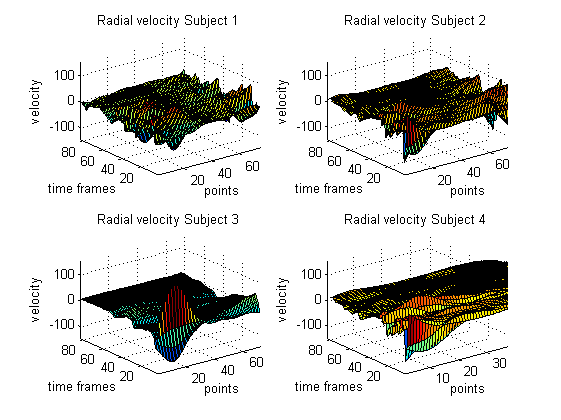 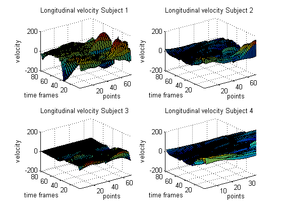 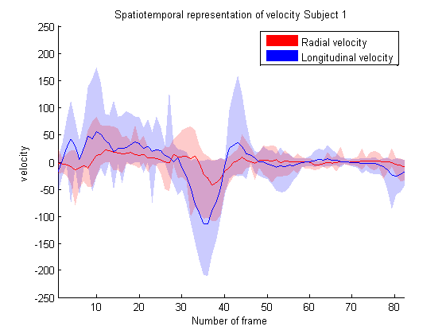 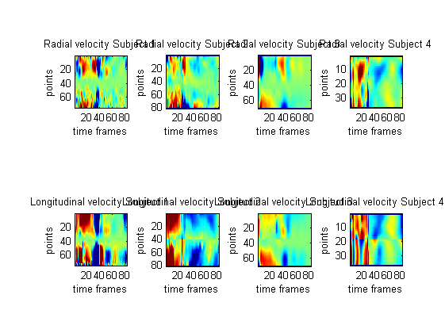
Strain Calculation
% Subject 1 E1 = zeros(83,75); for j = 1:83 %tiempo for i = 2:74 %puntos diff_long_x = (Subject{1}.phi_x(j,i+1) - Subject{1}.phi_x(j,i-1))/2; diff_long_y = (Subject{1}.phi_y(j,i+1) - Subject{1}.phi_y(j,i-1))/2; diff_long_x_inicial = (Subject{1}.phi_x(1,i+1) - Subject{1}.phi_x(1,i-1))/2; diff_long_y_inicial = (Subject{1}.phi_y(1,i+1) - Subject{1}.phi_y(1,i-1))/2; diff_long = [diff_long_x,diff_long_y]; diff_long_inicial = [diff_long_x_inicial,diff_long_y_inicial]; E1(j,i) = ((norm(diff_long))-(norm(diff_long_inicial)))/(norm(diff_long_inicial)); end end % STRAIN OF Subject 2 E2 = zeros(83,81); for j = 1:83 %tiempo for i = 2:80 %puntos diff_long_x = (Subject{2}.phi_x(j,i+1) - Subject{2}.phi_x(j,i-1))/2; diff_long_y = (Subject{2}.phi_y(j,i+1) - Subject{2}.phi_y(j,i-1))/2; diff_long_x_inicial = (Subject{2}.phi_x(1,i+1) - Subject{2}.phi_x(1,i-1))/2; diff_long_y_inicial = (Subject{2}.phi_y(1,i+1) - Subject{2}.phi_y(1,i-1))/2; diff_long = [diff_long_x,diff_long_y]; diff_long_inicial = [diff_long_x_inicial,diff_long_y_inicial]; E2(j,i) = ((norm(diff_long))-(norm(diff_long_inicial)))/(norm(diff_long_inicial)); end end % STRAIN OF Subject 3 E3 = zeros(83,71); for j = 1:83 %tiempo for i = 2:70 %puntos diff_long_x = (Subject{3}.phi_x(j,i+1) - Subject{3}.phi_x(j,i-1))/2; diff_long_y = (Subject{3}.phi_y(j,i+1) - Subject{3}.phi_y(j,i-1))/2; diff_long_x_inicial = (Subject{3}.phi_x(1,i+1) - Subject{3}.phi_x(1,i-1))/2; diff_long_y_inicial = (Subject{3}.phi_y(1,i+1) - Subject{3}.phi_y(1,i-1))/2; diff_long = [diff_long_x,diff_long_y]; diff_long_inicial = [diff_long_x_inicial,diff_long_y_inicial]; E3(j,i) = ((norm(diff_long))-(norm(diff_long_inicial)))/(norm(diff_long_inicial)); end end % STRAIN OF Subject 4 E4=zeros(83,37); for j = 1:83 %tiempo for i = 2:36 %puntos diff_long_x = (Subject{4}.phi_x(j,i+1) - Subject{4}.phi_x(j,i-1))/2; diff_long_y = (Subject{4}.phi_y(j,i+1) - Subject{4}.phi_y(j,i-1))/2; diff_long_x_inicial = (Subject{4}.phi_x(1,i+1) - Subject{4}.phi_x(1,i-1))/2; diff_long_y_inicial = (Subject{4}.phi_y(1,i+1) - Subject{4}.phi_y(1,i-1))/2; diff_long = [diff_long_x,diff_long_y]; diff_long_inicial = [diff_long_x_inicial,diff_long_y_inicial]; E4(j,i) = ((norm(diff_long))-(norm(diff_long_inicial)))/(norm(diff_long_inicial)); end end % Visualize the strain along the whole cycle for point i=19 for % Subject 1, point i=20 for Subject 2, point i=18 for Subject 3 and point % i=9 for Subject 4 figure; hold on; axis([1,83,-0.25,0.05]); plot(1:83,E1(:,19)); plot(1:83,E2(:,20),'r'); plot(1:83,E3(:,18),'m'); plot(1:83,E4(:,9),'g'); title('Strain at the mid-septal level of all Subjects') legend('Subject 1','Subject 2','Subject 3','Subject 4') xlabel('Number of frame') ylabel('Strain') % Spatiotemporal strain plot of the 4 Subjects using imagesc function figure h = subplot(1,4,1); imagesc(E1(:,:)') axis manual axis square set(h,'CLim',[-0.2,0.2]) xlabel('time frames') ylabel('points') title('Strain Subject 1') h = subplot(1,4,2); imagesc(E2(:,:)') axis manual axis square set(h,'CLim',[-0.2,0.2]) xlabel('time frames') ylabel('points') title('Strain Subject 2') h = subplot(1,4,3); imagesc(E3(:,:)') axis manual axis square set(h,'CLim',[-0.2,0.2]) xlabel('time frames') ylabel('points') title('Strain Subject 3') h = subplot(1,4,4); imagesc(E4(:,:)') axis manual axis square set(h,'CLim',[-0.2,0.2]) xlabel('time frames') ylabel('points') title('Strain Subject 4')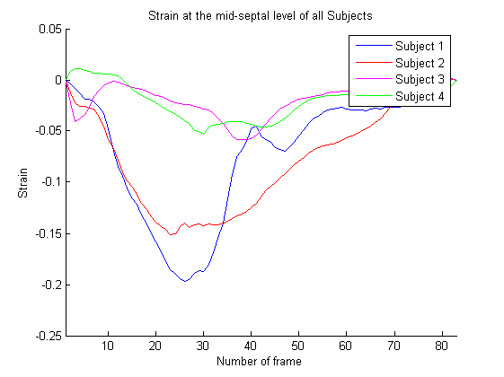 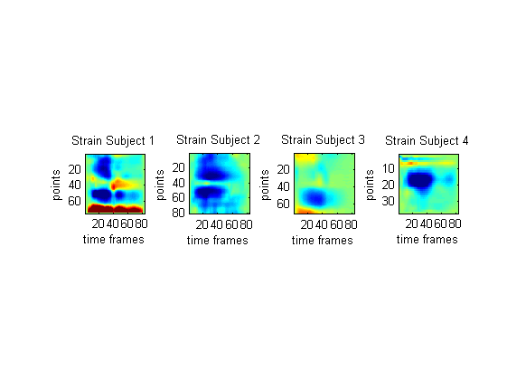